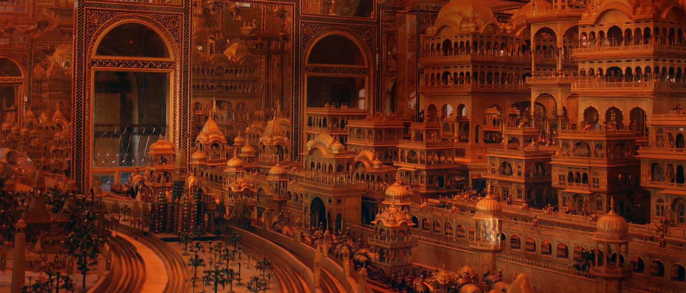
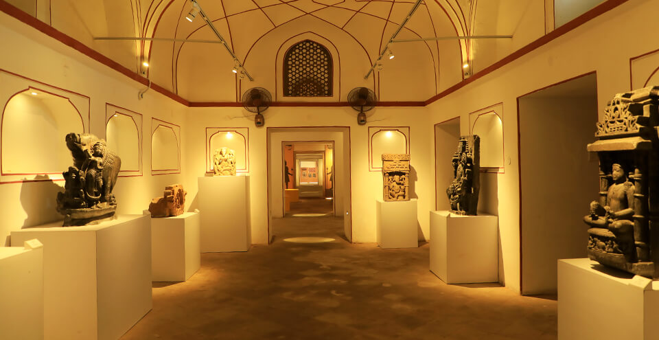

WELCOME IN HEART OF RAJASTHAN

AJMER
SONIJI KI NASIYAN
AJMER
THE DELIGHTFUL DARGAH DESTINATION
Ajmer is bustling city, located 130 km southwest of Jaipur and just 14 km from the pilgrimage town of Pushkar. The city of Ajmer gets its name from “Ajay Meru”, which can be roughly translated as “invincible hill”. Home to a number of tourist places, Ajmer can be a perfect representation of the diversity of the Indian culture and ethics, and displays a perfect blend of religion, community, culture, etc., coexisting and flourishing in harmony.
Ajmer remains a popular tourist attraction, in addition to being a pilgrimage centre for both Hindus and Muslims. The final resting place of the Sufi Saint, Khwaja Moinuddin Hasan Chisti, is visited by Muslims from all over the world; in fact, the Dargah is revered equally by both Hindus and Muslims. The city is surrounded by the expansive lake of Ana Sagar and the rugged hills of Aravalli. Although Ajmer Sharif Dargah, the shrine of
Khwaja Muin-ud-din Chishti, remains as the most famous tourist places to visit in Ajmer, the city is also significantly known for the Jain religion and is home to an amazing golden Jain Temple. Ajmer is also a well-known learning centre. The Mayo College was one of India’s first schools that acted as the stepping stone for
the British style of education and is now one of the popular places to visit in Ajmer.
History of Ajmer
The city was founded by Raja Ajaypal Chauhan in the 7th century AD and the city remained as the epicentre of the Chauhan Dynasty till the 12th century AD. The Chauhan dynasty was responsible for the construction of the first hill fort of India, Taragarh, another must visit places in Ajmer. After the defeat of Prithviraj Chauhan by Mohammed Ghori, Ajmer become home to a number of dynasties.
The Mughal Sultans particularly liked Ajmer due the presence of the holy Ajmer Sharif Dargah, the most popular tourist place in the city. Ajmer has a rich history and played host to the first meeting between the Mughal King Jahangir and the Ambassador of the Court of King James 1 of England, Sir Thomas Roe in 1616. The city was officially handed over to the British a few centuries later,
making Ajmer the only region in Rajputana to be directly controlled by the British East India Company.
Places to Visit near Ajmer
Of the number of places to visit near Ajmer, Pushkar, which is about 14 kmremains as the most popular destination. Pushkar is a sacred spot for Hindus. The only known temple dedicated to Lord Brahma is situated in Pushkar and Hindus visit the city in large numbers during the month of Karthik to take a dip in the holy sarovar. Another tourist place near Ajmer that one can visit is the
Lake Foy Sagar, an artificial lake. The lake was built by English Engineer Mr Foy in 1892 AD. The primary objective behind the construction of the lake was to provide famine relief through employment for the locals. The lake offers some breath taking views of the Aravalli range.
Eating in Ajmer
Ajmer is a melting pot of culture. The places to see in Ajmer are proof of this, from the Dargah to the Jain Temple. This mingling of cultures has influenced the city’s eating scene as well. One can enjoy traditional Rajasthani cuisine along with dishes influenced by the Mughal and British cultures. One can also find street vendors dishing out everyone’s favourite street food.
ATTRACTIONS & PLACES TO VISIT AND EXPLORE IN AJMER
THE AJMER SHARIF DARGAH
This is a Sufi shrine which encloses the ‘maqbara’ (grave) of Garib Nawaz,
the Sufi saint Khwaja Moinuddin Chisti. Built in the 13th century, the shrine
is popular among people of all faiths who flock here to have their prayers answered. The shrine has three gates – the main gate or the Nizam gate, the Shah Jahan gate erected by the Mughal Emperor and the Buland Darwaza. Another big draw at this holy shrine is the sacred and scrumptious food that is served to devotees.

ADHAI DIN KA JHONPDA
The Adhai Din Ka Jhonpda was originally built to function as a Sanskrit college
but was later converted into a mosque by Sultan Ghori in 1198 AD. An impressive blend of
Indo-Islamic architecture, the structure was further beautified by Sultan Iltutmish in 1213 AD.
Legend has it that the mosque is known as Adhai din ka Jhonpda (literally meaning, The Hut of Two and a Half Days) because of a two and half day fair held here during Urs in the 18th century.
MAYO COLLEGE
Mayo College is one of India’s oldest independent boarding schools. Founded in 1875, and named
after Richard Bourke, the 6th Earl of Mayo, Mayo College was set up to provide the scions of India’s princely
states with an education similar to that provided by the Eton College in Britain. John Lockwood Kipling, father
of Nobel Laureate, Rudyard Kipling, as principal of Mayo College, furnished the design of the Coat of Arms which shows a Rajput and a Bhil warrior. The college building is one of the finest extant examples of Indo-Saracenic style of architecture.
ANASGAR LAKE
Anasagar Lake is a scenic artificial lake, commissioned and built by Arnoraj Chauhan, son of Ajaypal Chauhan,
between 1135 and 1150 AD. Arnoraj was also known as Anaji, which gives the lake its name. Many years later, Mughal Emperor
Jahangir added his touch to the lake by laying out the Daulat Bagh Gardens near the lake. Emperor Shah Jahan too, contributed
to the expansion by building five pavilions, known as the Baradari, between the garden and the lake.
>

AJMER GOVERNMENT MUSEUM
The Ajmer Government Museum serves as one of the prime tourist destinations in Ajmer. The museum is housed within the
magnificent fortified palace of the legendary Mughal Emperor Akbar, which was built in 1570. The museum is also known as Bharatpur
Museum and is home to a rich collection of archaeological artefacts. Along with stone sculptures, inscriptions and armours, it
features the finest paintings of the previous Maharajas of Bharatpur.So Lets Plan your Trip for Fun

SAI BABA TEMPLE
Spread over an area of over five bheegas (or over two acres) at Ajay Nagar, the Sai Baba Temple in Ajmer was constructed by
Suresh K Lal, a resident of the Garib Nawaz City in 1999. It’s one of the most recent pieces of architecture and is very popular among
all Sai Baba devotees. The temple is built with the purest form of marble that possesses the unique quality of a translucent stone,
allowing light to pass through it. Every Sai Baba disciple should definitely visit this shrine once in their lifetime.
VICTORIA CLOCK TOWER
Ajmer is a city that has seen major influence from the British in its past. The British left their legacy in many forms in Ajmer,
some of which are in the form of educational institutions and architectural buildings in the city. While a couple of these buildings are located
in the heart of Ajmer, one that immediately catches the eye of the visitor is the Victoria Jubilee Clock Tower. Located just opposite the railway
station in Ajmer, the monument is an imposing clock tower that was built back in 1887. It is particularly well-known for its architectural beauty, and is quite an impressive example of British architecture, reminding onlookers of a smaller version of the famous Big Ben.
PRITHVI RAJ SMARAK
Prithvi Raj Smarak is a memorial made in the honour of the brave Rajput chief, Prithvi Raj Chauhan III.Regarded as the epitome of devotion and courage,
he was the last ruler of the Chauhan lineage and was enthroned to rule over the twin capitals of the Ajmer
Complete City is visible from this prime location . Also the Taragarh Fort is at the back side .
The monument is mammoth and looks fantastic ... Prithviraj was the last Hindu King Samarat who ruled the Delhi .So COme and Visit this Most Fabulous Tourist place
Don't Forget to come and visit this site memorial.
HOW TO REACH HERE
Ajmer is well-connected via both, the road and rail network.
The nearest airport is Kishangarh Airport, which is about 30 kilometres
away and helps Ajmer remain well-connected with major Indian cities. One can easily pre-book a cab
or hire one from the taxi stands outside the airport. The journey will take around 39 mins.
Buses from the state capital and from other cities also ply to Ajmer regularly. Government run buses run between Jaipur
and Ajmer throughout the day. Private operators also ply on the route. There are also less-frequent coach services running between Ajmer and Delhi.
One can also use the cloakroom at the main bus stand.
Ajmer is located on the Delhi-Jaipur-Marwar-Ahmedabad-Mumbai railway line. It is well connected by rail as most trains on this route halt at Ajmer.
I WISH TO VISIT AJMER